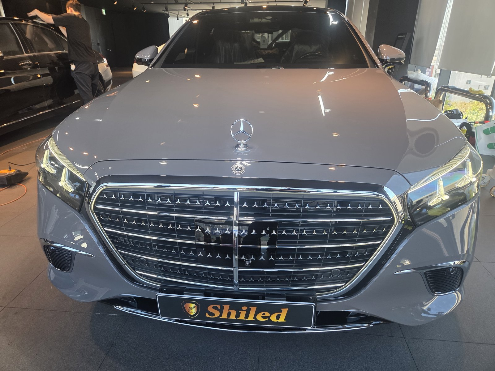
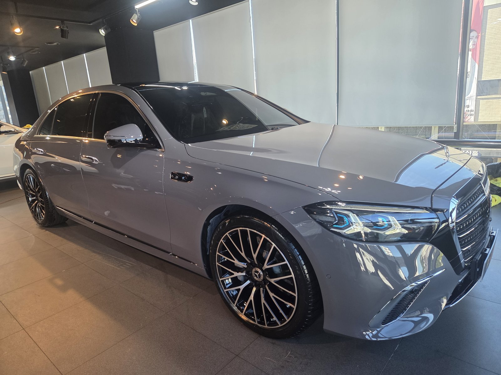
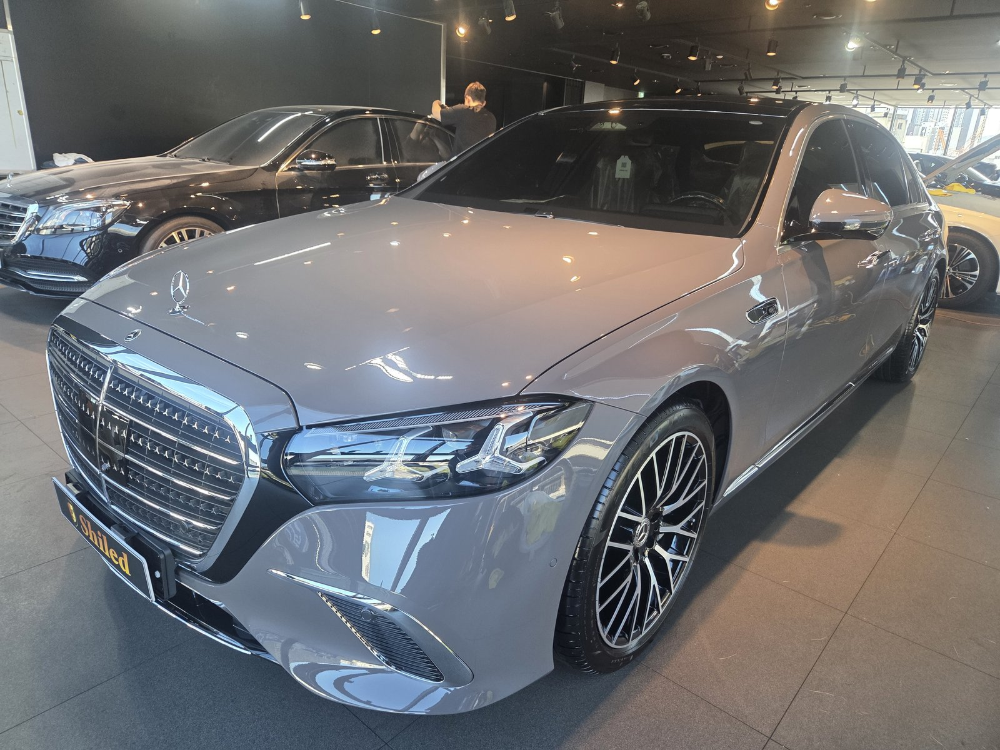
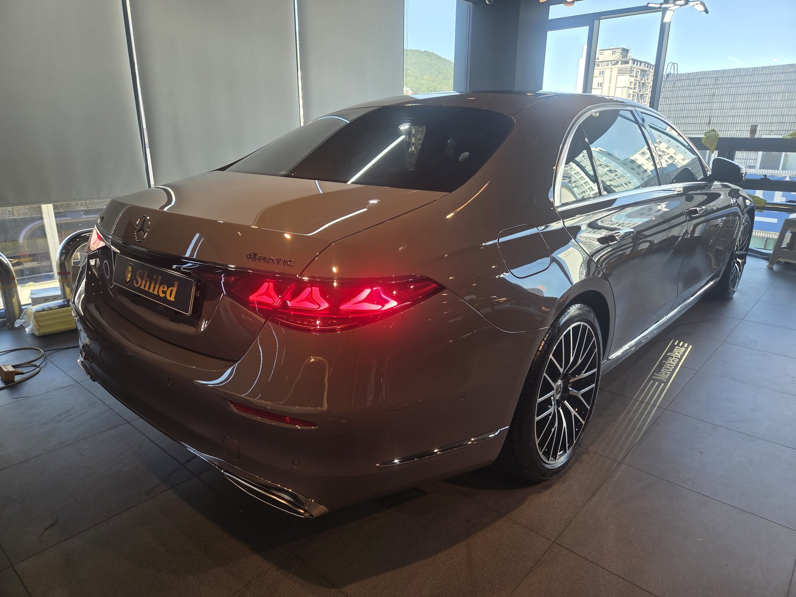
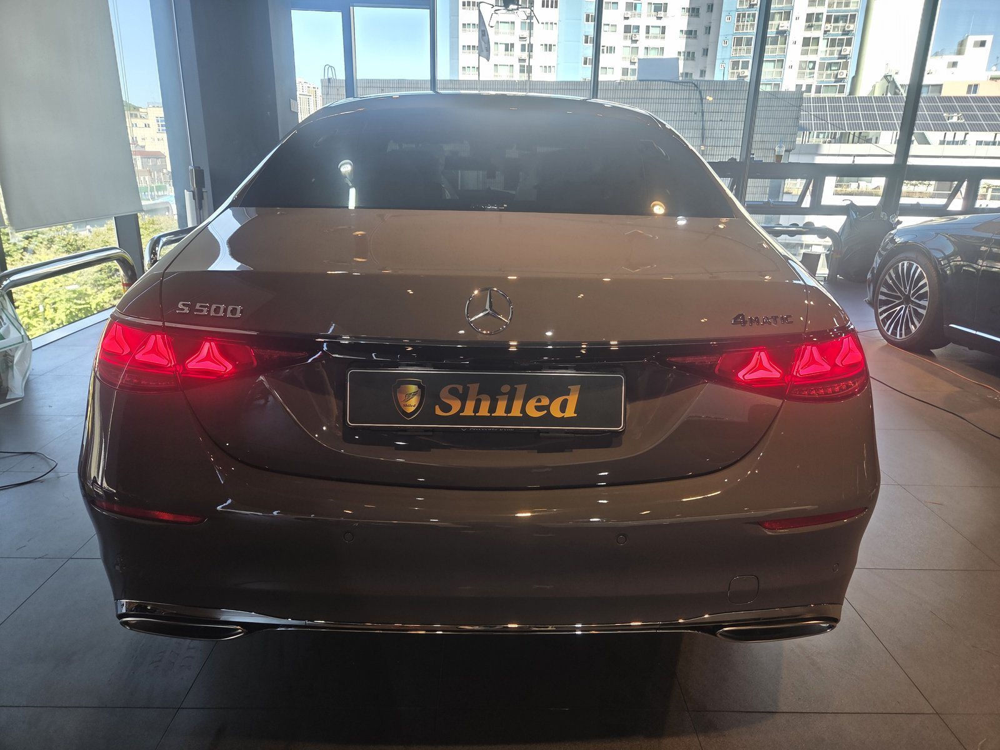
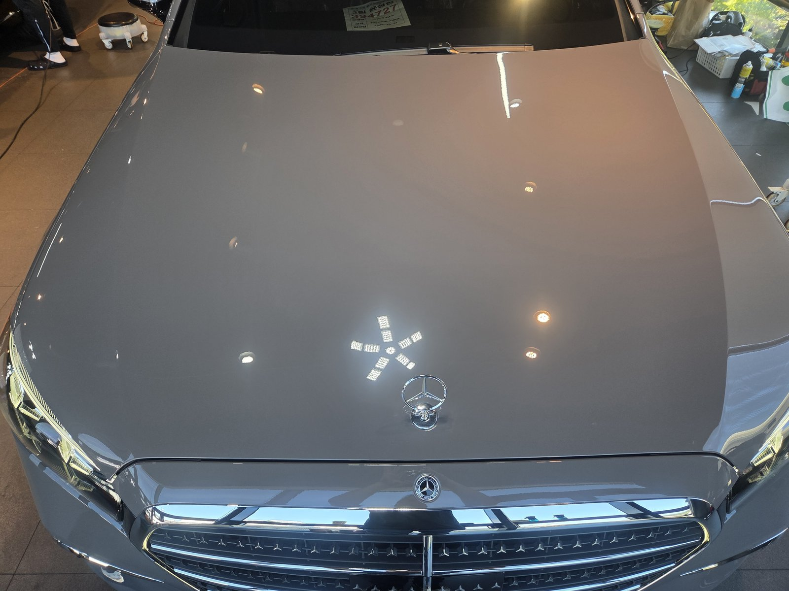
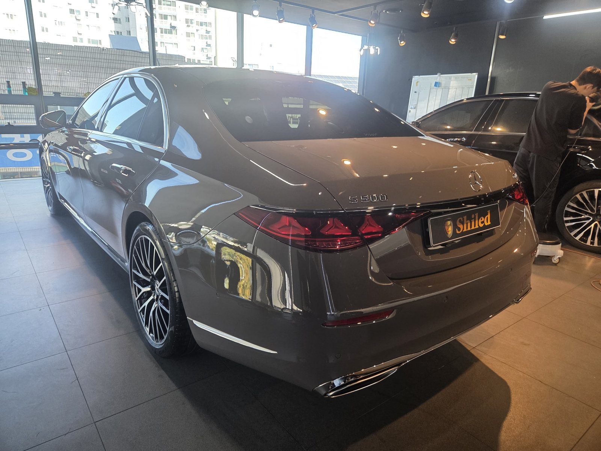
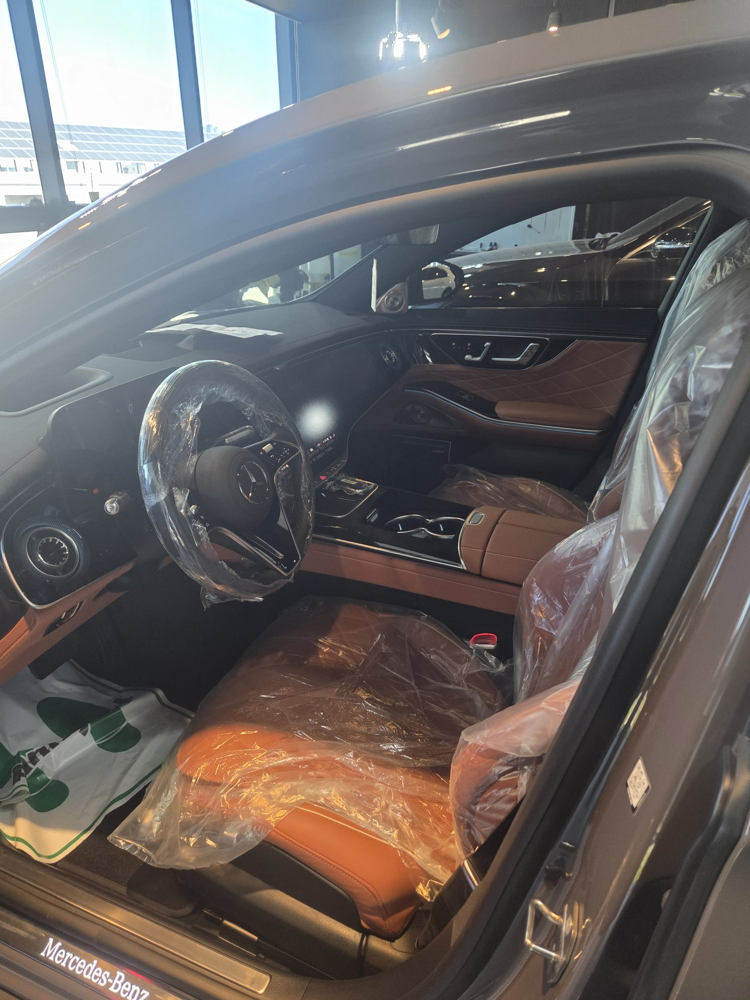
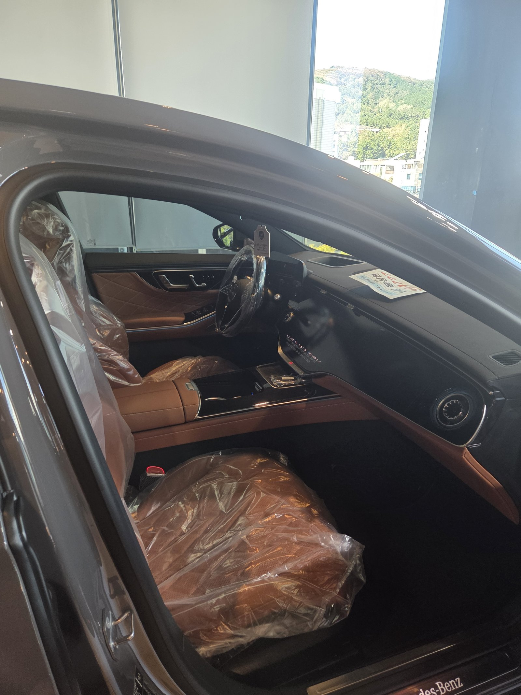
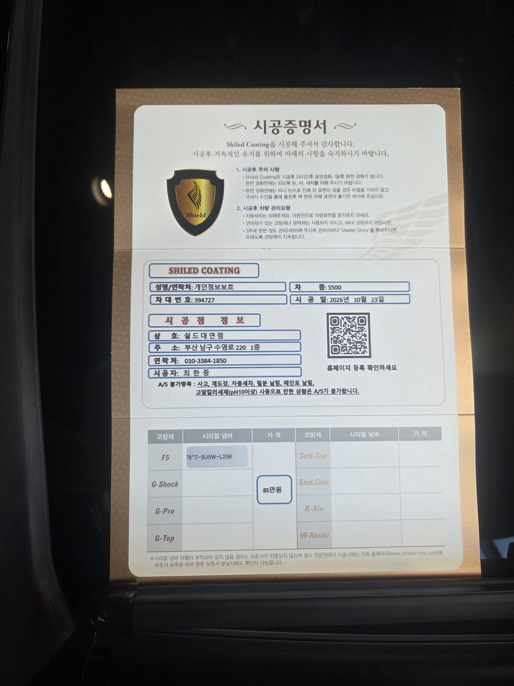

벤츠 S500, 웜그레이 신차입니다.
요즘 S클래스는 검정이 대부분이라 이 색은 반갑게 들어왔습니다.
출고 전 F5로 진행한 부산 유리막코팅 기록입니다.

웜그레이는 왜 사진마다 색이 달라 보이나요?
빛의 방향과 색온도에 따라 회색과 갈색 사이를 오가는 색이기 때문입니다.
앞에서 찍은 사진은 맑은 회색에 가깝습니다.
창가 햇빛을 받은 뒤쪽은 갈색 기운이 훨씬 짙게 올라옵니다.
같은 차, 같은 날, 같은 매장 안에서 찍은 사진입니다.




중간 톤 차량은 어디를 보고 점검하나요?
검정처럼 반사가 확 드러나지 않는 색입니다.
그래서 오염도, 닦임 자국도 눈에 덜 띕니다.
눈에 덜 띈다고 없는 게 아닙니다.
보닛 위 천장 조명이 번짐 없이 맺히는지,
창가 쪽 C필러와 트렁크 곡면에 얼룩이 없는지 방향을 바꿔가며 확인했습니다.


기술자의 팁
회색 계열은 먼지가 덜 보여 세차 주기를 놓치기 쉽습니다. 겉으로 깨끗해 보여도 2~3주에 한 번은 물세차로 쌓인 오염을 씻어내 주십시오.
S500 웜그레이에 F5를 올린 이유
F5는 색감의 깊이와 글로시함에 특화된 코팅입니다.
웜그레이처럼 빛에 따라 톤이 바뀌는 색은
광이 올라갈수록 그 변화가 더 또렷하게 살아납니다.
코팅제는 대표가 직접 개발·제조한 제품입니다.
이번 부산 유리막코팅은 F5 싱글로 진행했습니다.


실내는 브라운 가죽입니다.
시트 보호 비닐도 아직 그대로 씌워진 출고 직전 상태입니다.
시공증명서도 함께 드립니다
모든 시공 차량에 시공증명서를 드립니다.
차종·시공일·코팅제 시리얼 번호가 적혀 있고, 홈페이지에 등록해 보증을 받으실 수 있습니다.

차종·시공일·코팅제 시리얼이 기재된 시공증명서
자주 묻는 질문
Q. 웜그레이 같은 중간 톤 차량에도 F5가 맞나요?
A. 맞습니다. F5는 색감의 깊이를 살리는 코팅이라, 빛에 따라 톤이 바뀌는 웜그레이 같은 색에서 그 변화가 더 선명하게 보입니다.
Q. 회색 차는 오염이 덜 보이는데 코팅이 꼭 필요한가요?
A. 오염이 덜 보이는 것과 오염이 덜 붙는 것은 다릅니다. 눈에 안 띌 뿐 도장면에는 그대로 쌓이기 때문에 출고 전에 막을 입혀두는 편이 관리가 쉽습니다.
Q. 브라운 가죽 실내는 따로 관리가 필요한가요?
A. 밝은 계열 가죽은 청바지 이염이나 손때가 남기 쉽습니다. 걱정되시면 시트코팅을 함께 상담해 드립니다.
Q. 왜 출고 전에 코팅하나요?
A. 도장면이 가장 깨끗할 때 올린 코팅이 가장 오래갑니다. 운행과 세차로 잔기스가 생기기 전에 입혀두는 것이 핵심입니다.
Q. 쉴드광택 위치와 예약은 어떻게 하나요?
A. 부산 남구 유엔로220 1F 쉴드광택입니다. 예약·상담은 010-3384-1850, 대표 최한중이 직접 상담하고 책임 시공합니다.
새 차일수록 시작점이 다릅니다. 가장 깨끗할 때 입혀두십시오.
제품을 직접 만드는 사람이 직접 시공합니다.
부산에서 신차 유리막코팅을 고민 중이시면 편하게 연락 주십시오.
어떤 차를 타냐보다 어떻게 타냐가 중요합니다~!
시공 중에는 전화를 받지 못할 때가 많습니다.
카카오톡으로 차종과 원하시는 시공을 남겨주시면 확인 후 답변드립니다.
쉴드광택 · 부산 남구 유엔로220 1F · 대표 최한중